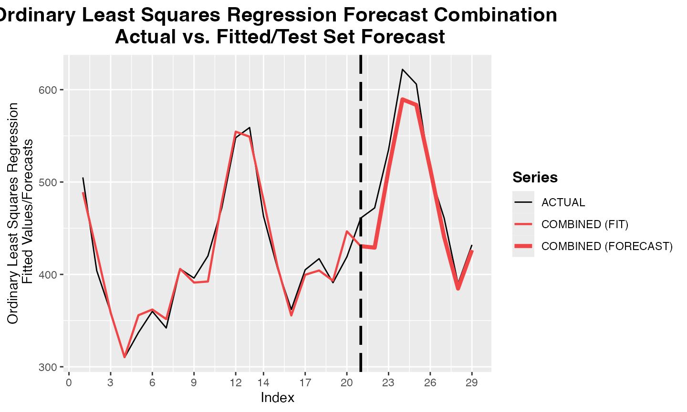
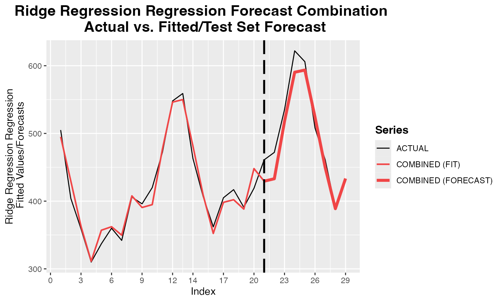
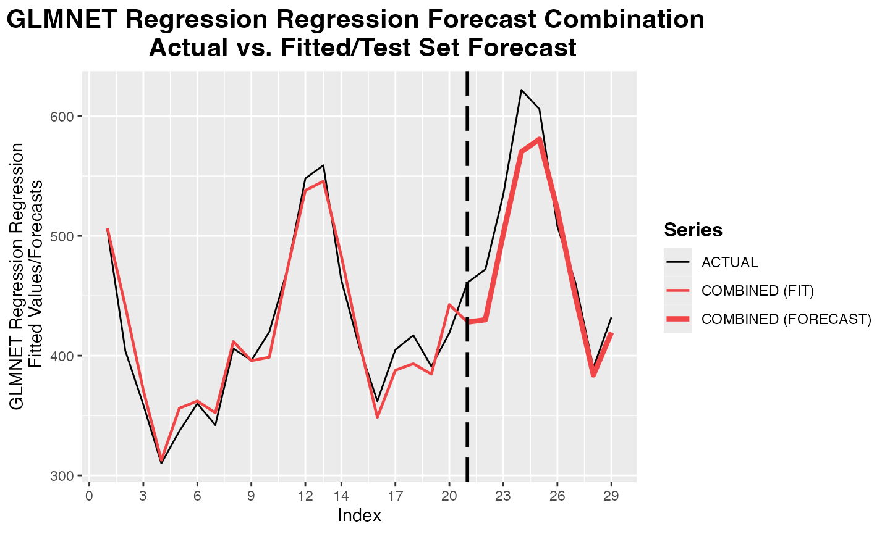

comb_OLS2.Rmd## Registered S3 method overwritten by 'quantmod':
## method from
## as.zoo.data.frame zoo## Loading required package: remotes## Loading required package: glmnet## Loading required package: Matrix## Loaded glmnet 4.1-8## Loading required package: ahead## Loading required package: foreach## Loading required package: snow## Registered S3 method overwritten by 'ForecastComb':
## method from
## predict.ridge ahead##
## Attaching package: 'ForecastComb'## The following objects are masked from 'package:ahead':
##
## comb_GLMNET, comb_OLS, comb_Ridge, ridge
h <- 29L
train_AirPassengers <- ts(AirPassengers[1:115], start = start(AirPassengers), frequency = frequency(AirPassengers))
arima_forecast <- forecast::forecast(forecast::auto.arima(train_AirPassengers), h=h)
ets_forecast <- forecast::forecast(forecast::ets(train_AirPassengers), h=h)
theta_forecast <- forecast::thetaf(train_AirPassengers, h=h)
ridge_forecast <- ahead::dynrmf(train_AirPassengers, h=h)
glmnet_forecast <- ahead::dynrmf(train_AirPassengers, h=h,
fit_func = glmnet::cv.glmnet, predict_func = predict)## ME RMSE MAE MPE MAPE MASE
## Training set 0.2145268 9.067565 6.898655 0.03414791 2.899017 0.3275496
## Test set 22.9591869 35.082793 28.547389 4.53360086 6.124545 1.3554362
## ACF1
## Training set 0.01529513
## Test set NA## ME RMSE MAE MPE MAPE MASE
## Training set 1.375376 8.141851 6.348423 0.4340769 2.755794 0.3014245
## Test set 15.907062 35.807216 29.976427 2.6967550 6.533672 1.4232873
## ACF1
## Training set 0.1456818
## Test set NA## ME RMSE MAE MPE MAPE MASE
## Training set 2.509724 8.244161 6.381718 0.9709265 2.794444 0.3030054
## Test set 18.499435 38.339636 32.160094 3.2578724 6.995654 1.5269682
## ACF1
## Training set -0.06759516
## Test set NA## ME RMSE MAE MPE MAPE MASE
## Training set 1.517011e-15 13.03215 10.56922 -0.05818072 5.014722 0.5447499
## Test set -1.868676e+01 41.59669 32.81392 -5.01410649 7.788813 1.5580118
## ACF1
## Training set 0.581781
## Test set NA## ME RMSE MAE MPE MAPE MASE
## Training set 2.207596e-15 13.64072 10.86278 -0.7182150 5.219268 0.5598804
## Test set 1.701171e+00 34.42065 28.69509 -0.4970236 6.460795 1.3624492
## ACF1
## Training set 0.616725
## Test set NA
airpass <- cbind(arima_forecast$mean,
ets_forecast$mean, theta_forecast$mean,
ridge_forecast$mean, glmnet_forecast$mean,
ts(AirPassengers[116:144],
start=start(arima_forecast$mean),
frequency=frequency(AirPassengers)))
(forecasting_methods <- colnames(airpass)[1:5])## [1] "ARIMA" "ETS" "Theta" "Ridge" "GLMNET"
train_obs <- airpass[1:21, 6]
train_pred <- airpass[1:21, 1:5]
test_obs <- airpass[22:29, 6]
test_pred <- airpass[22:29, 1:5]
data <- ForecastComb::foreccomb(train_obs, train_pred, test_obs, test_pred)
start <- proc.time()[3]
obj <- ForecastComb::comb_OLS(data, custom_error=custom_error)
print(proc.time()[3] - start)## elapsed
## 0.017
print(obj$Accuracy_Test)## ME RMSE MAE MPE MAPE Custom Error
## Test set 18.10097 23.41915 19.62024 3.496798 3.795867 19.62024
print(obj$Weights)## [1] 0.5139769 4.6082642 -4.1413190 -0.1354900 0.3797416## [1] -18.10097
plot(obj)
start <- proc.time()[3]
obj <- ForecastComb::comb_Ridge(data, custom_error=custom_error)
print(proc.time()[3] - start)## elapsed
## 0.008## Warning in rbind(object$Accuracy_Train[1:5], object$Accuracy_Test): number of
## columns of result is not a multiple of vector length (arg 1)##
## Summary of Forecast Combination
## -------------------------------
##
## Method: Ridge Regression Regression
##
## Individual Forecasts & Combination Weights:
##
## Combination Weight
## ARIMA 35.34867
## ETS 126.41138
## Theta -97.44778
## Ridge 49.71404
## GLMNET -48.35651
##
## Intercept (Bias-Correction): 416.3333
##
## Accuracy of Combined Forecast:
##
## ME RMSE MAE MPE MAPE NA
## Training Set -5.413601e-14 14.73313 11.13953 -0.134554 2.680224 -5.413601e-14
## Test set 1.192057e+01 20.50185 16.29153 2.237091 3.109866 1.629153e+01
##
## Additional information can be extracted from the combination object:
## For fitted values (training set): obj$Fitted
## For forecasts (test set): obj$Forecasts_Test
## See str(obj) for full list.
print(obj$Accuracy_Test)## ME RMSE MAE MPE MAPE Custom Error
## Test set 11.92057 20.50185 16.29153 2.237091 3.109866 16.29153## [1] -11.92057
plot(obj)
start <- proc.time()[3]
obj <- ForecastComb::comb_GLMNET(data, custom_error=custom_error)## Warning: Option grouped=FALSE enforced in cv.glmnet, since < 3 observations per
## fold## elapsed
## 0.093
print(obj$Accuracy_Test)## ME RMSE MAE MPE MAPE Custom Error
## Test set -21.08074 28.89815 24.49499 -4.291015 4.945516 24.49499## [1] -21.08074
plot(obj)